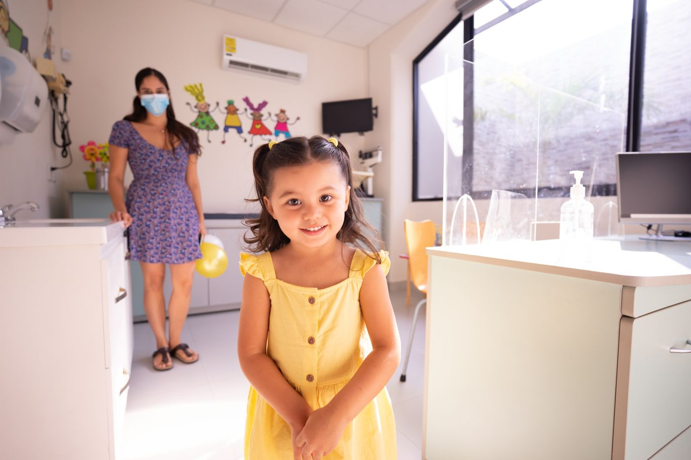
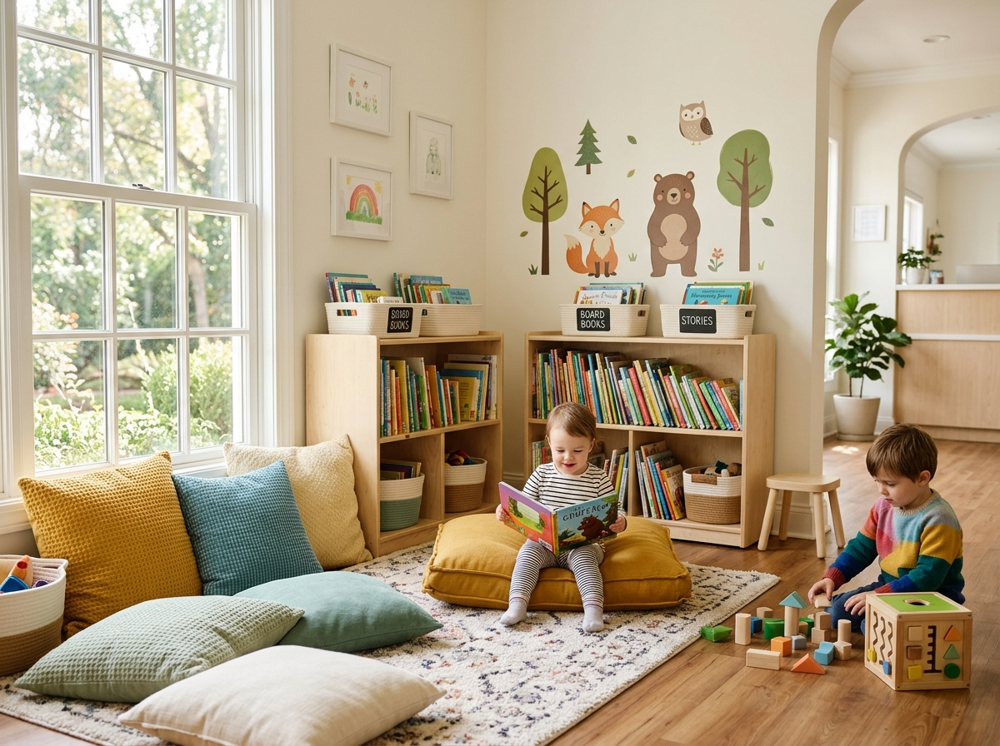
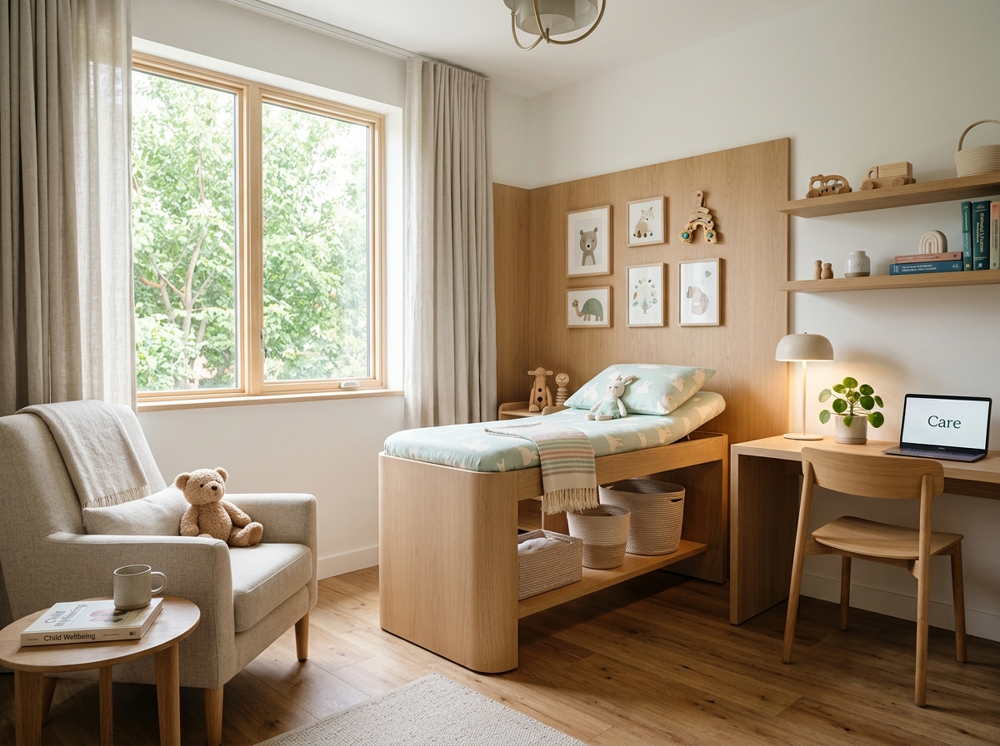
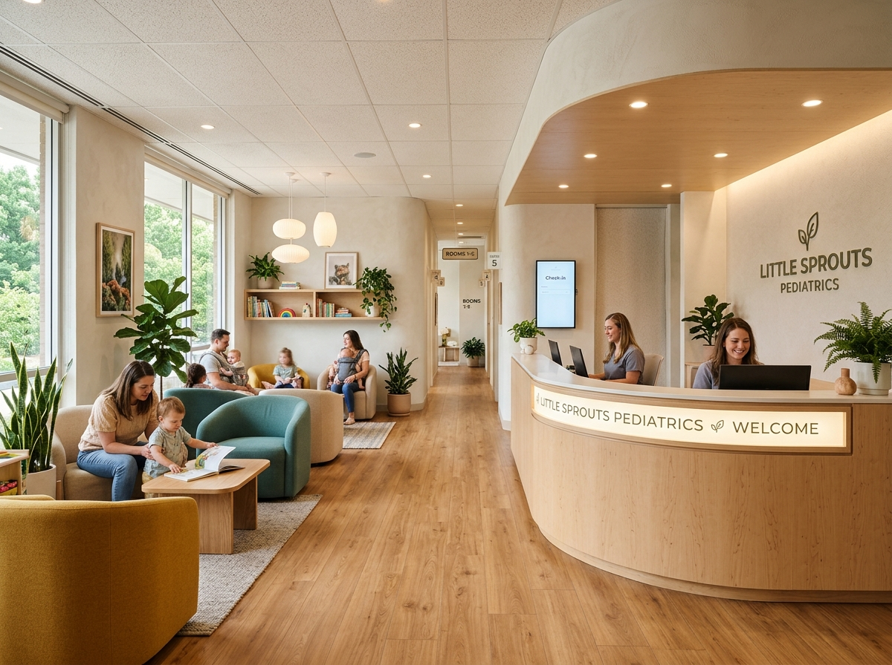

Care That Grows With Your Child.
From their very first feeding to their very first school physical, we grow alongside your family — with patience, honesty and genuine joy in watching kids thrive.
Book Your Child’s Visit
Built by parents, run by pediatricians.
LittleSteps began in a single consultation room with a simple frustration: too many kids feared the doctor. We designed a clinic where the checkup is something children actually look forward to — soft lighting, books in every corner, and clinicians who measure in stories, not just centimeters.
4,000+
little patients cared for*
15+
years of family care*
6
core pediatric services
98%
would recommend us*
*Illustrative figures for this website concept; replace with your clinic’s verified data.
What guides every tiny step.
Our Mission
To make expert pediatric care feel warm, simple and within reach — empowering parents and protecting childhood.
Our Vision
A neighborhood where every child grows up monitored, immunized, nourished and genuinely heard.
Our Values
Kindness before convenience. Evidence before anecdote. Every child seen, never rushed.
We treat the child, not the chart.
- 1Meet them where they are. Every exam begins with toys, stories or stickers — never with cold instruments.
- 2Explain in kid language. “The stethoscope is a listening microphone” beats “auscultation” every time.
- 3Celebrate small wins. Bravery gets noticed, applause and a well-earned sticker.
- 4Never rush, never shame. Tears happen. We wait, we breathe, we continue — with dignity.
You know your child best.
Our job is to combine your insight with clinical science — and to make you feel confident between visits, not dependent on them.
Written take-homes
Plain-language summaries after every visit, so nothing gets forgotten.
24h parent callback
Non-urgent questions answered by our nursing team within one working day.
Shared growth charts
Height, weight and milestones you can review together at each checkup.
No-blame nutrition talks
Practical feeding guidance without guilt — picky eaters welcome.
A clinic designed to feel like a second home.



Let’s Make Every Growing Year Healthier.
Join thousands of families who trust LittleSteps for calm, complete pediatric care.
Book Your Child’s Visit